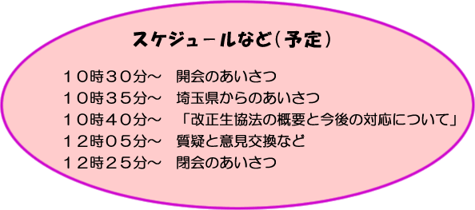

|
埼玉県消費生活協同組合役職員研修委託事業
主催：埼玉県、埼玉県生活協同組合連合会
先の国会で全会派一致により59年ぶりに改正された生協法は、２００８年4月1日より施行されます。改正生協法への対応を円滑に進めていく為にも法律への理解と各生協における定款改正への準備が大切です。
埼玉県生協連として以下の日程で学習会を開催する運びとなりましたので、お知らせ致します。
●日時 ２００７年１１月１６日（金）１０時３０分～１２時３０分
●会場 コムナーレ第１５集会室（浦和駅東口駅前パルコ９階）
定員130名
● 講師とテーマ
１．「改正生協法の概要と今後の対応について」
石川 廣 氏（日本生協連改正生協法対策室）

● 問い合わせ・申込み先
埼玉県生活協同組合連合会 担当：清水
〒330-0064 埼玉県さいたま市浦和区岸町7－11－5
電話＝０４８－８４４－８９７１：ＦＡＸ＝０４８－８４４－８９７３
|